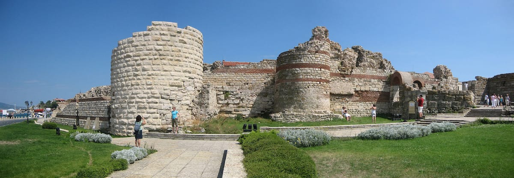

Bulgaria is home to several UNESCO World Heritage Sites that reflect the country’s rich history, culture, and natural beauty. These sites are recognized by the United Nations Educational, Scientific and Cultural Organization (UNESCO) for their outstanding universal value. They represent important achievements in architecture, religion, art, and natural preservation, and they help protect some of the most significant cultural and historical treasures of the country.
One of the most famous UNESCO sites in Bulgaria is the Rila Monastery. Located in the Rila Mountains, this monastery is the largest and most important religious complex in the country. Founded in the 10th century, it has served as a spiritual and cultural center for Bulgarian Orthodox Christianity for many centuries. The monastery is known for its beautiful frescoes, colorful architectural design, and peaceful mountain setting. It has played a vital role in preserving Bulgarian culture, religion, and education during different periods of history.
Another important UNESCO site is the Boyana Church, located near the capital city of Sofia. This small medieval church is famous for its well-preserved frescoes painted in the 13th century. The paintings are considered masterpieces of medieval European art because of their detailed expressions, realistic figures, and advanced artistic techniques for that time. The Boyana Church offers visitors a rare opportunity to see early examples of artistic innovation in Eastern Europe.
The Thracian Tomb of Kazanlak is another significant UNESCO World Heritage Site. This ancient tomb dates back to the Thracian civilization, which existed in the region long before the Roman Empire. The tomb is known for its impressive wall paintings that depict scenes of rituals, celebrations, and daily life of the Thracian people. These paintings provide valuable information about ancient traditions and beliefs.
Bulgaria also has important natural UNESCO sites. One of them is the Pirin National Park, which is famous for its dramatic mountain landscapes, glacial lakes, and diverse plant and animal species. The park is a paradise for nature lovers and hikers, offering breathtaking scenery and a chance to experience Bulgaria’s unique natural environment.
Another remarkable site is the Srebarna Nature Reserve, a protected wetland area located along the Danube River. This reserve is known for its rich biodiversity and serves as an important habitat for many bird species, including rare and endangered birds. It is also an important stop for migratory birds traveling between Europe and Africa.
These UNESCO World Heritage Sites highlight the importance of preserving cultural and natural heritage for future generations. They attract visitors from around the world who want to learn about Bulgaria’s history, admire its artistic achievements, and experience its natural landscapes. Through careful protection and conservation, these sites continue to represent the historical and environmental richness that makes Bulgaria a unique destination for travelers and researchers alike.